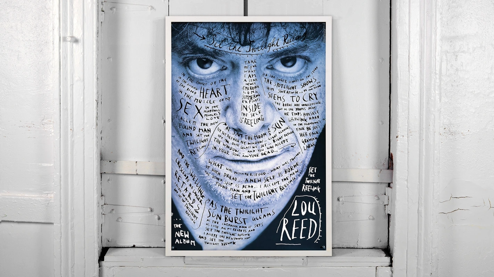

Trickster or Creative Maestro? A Fine Line Between Gimmick and Genius
Stefan Sagmeister's work can be seen in two very contrasting ways, some may see his work as playful, thought provoking genius designs when others may see his work as a gimmick by the use of tricks and ‘humorous’ designs. Is Sagmiester just a trickster who relies on using shock value and visual deception to attract an audience or is he truly a creative maestro, redefining the boundary's of graphic design with a purpose and meaning behind each of his designs.
The majority of Sagmiester’s most iconic works relay on the use of visual trickery, unexpected materials or shock value. From this perspective you may think that Sagmeister’s playful use of design may seem to prioritize style over substance.

In contrast to this argument, you may argue that his unconventional approach to design reflects a deeper purpose. His tricks are not just random or superficial, they are tools for engaging with audiences, to encourage participation and to explore profound themes. Sagmiester cleverly uses visual surprises and unconventional materials in his designs to disrupt the ‘expectations’ of design, to produce emotional connections and to express ideas in ways that traditional design cannot.
Ultimately, the debate between Sagmeister being a “trickster” or “creative maestro” reveals Sagmeister’s excellence, he is both.


.png)